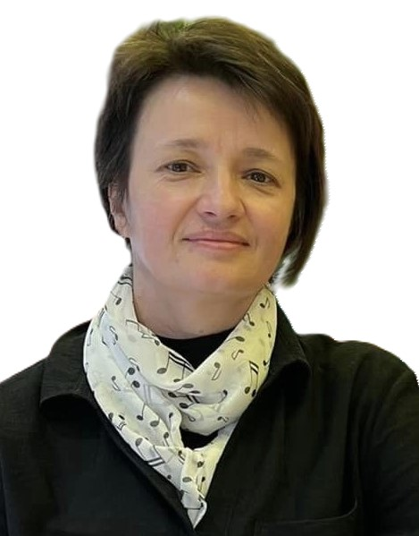
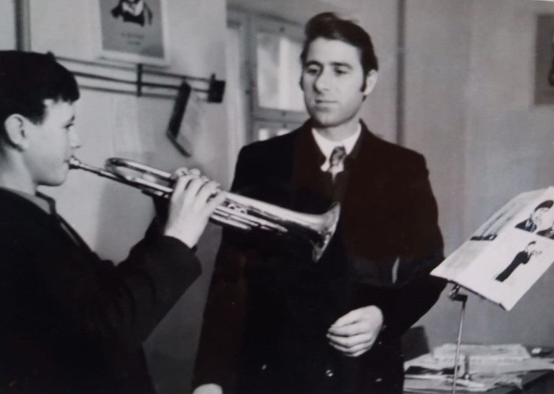

Dimitrașco Natalia
Director, grad managerial unu
Profesoară de artă teatrală, grad didactic superior. Conducătoarea Studioului artistic ”Micul Prinț”.

Instituită în 1969 ca Școală de Muzică, cu 67 de elevi înmatriculați la specialități de pian, vioară, acordeon și instrumente aerofone, în anul 1995 instituția a primit statutul de Școală de Arte prin contopirea cu Școala de Pictură din orașul Criuleni. În aproape 55 de ani de activitate, instituția a oferit cunoștințe în domeniul artelor copiilor din oraș și regiune, având și filiale. În prezent, în Școala de Arte Criuleni învață 194 de elevi la cele două compartimente: Muzică și Creație.
Mai multȘcoala de Arte Criuleni tinde spre a fi o instituție de învățământ extrașcolar artistic deschisă comunității prin realizarea de parteneriate și colaborări, prin oferirea serviciilor educaționale de eficiență apreciată de elevi, părinți, parteneri și demonstrată prin progres în rezultate deosebite ale discipolilor și a cadrelor didactice pe plan local, național și internațional, prin îmbunătățirea condiţiilor materiale necesare unui învăţământ de calitate, precum și pentru asigurarea egalităţii şanselor tuturor elevilor doritori să facă studii la noi.
Realizarea unui program de dezvoltare a competențelor artistice la elevii din or. Criuleni și regiune, pregătirea lor preprofesională în domeniul artelor prin implementarea politicilor educaționale specifice, oferirea unui serviciu extracurricular de calitate, diversificat, actual și motivant, desfășurat într-un climat creativ și prietenos actorilor participanți la actul educațional, îndreptat spre dezvoltarea multilaterală a personalității copilului și educarea tinerei generații în spiritul promovării și respectării valorilor europene fundamentale, general-umane și naționale.
Studii academice de bază în domeniul artelor sunt oferite de către 21 de cadre didactice, dintre care 2 sunt tineri specialiști, iar 6 sunt de vârstă pensionară; 18 sunt angajați titulari, iar 2 prin cumul extern.
| Total cadre didactice | Studii superioare | Studii medii de specialitate | Studii medii |
|---|---|---|---|
| 21 | 15 | 6 | 0 |
În ultimii 5 ani 4 persoane au absolvit ciclul de Licență și 3 persoane, ciclul de Master în domeniul educației. 9 profesori sunt absolvenți ai Școlii de Arte Criuleni în diferiți ani.

Director, grad managerial unu
Profesoară de artă teatrală, grad didactic superior. Conducătoarea Studioului artistic ”Micul Prinț”.
Cinci colective artistice formate de profesori în școală duc faima Criuleniului evoluând pe scenele locale și raionale, pe platourile festivalurilor şi concursurilor naţionale şi internaţionale: "Victoria junior", "Crio dance", "KorAll", "Micul prinț" și ansamblul de muzică populară.
Școala de Arte Criuleni se mândrește nespus cu realizările discipolilor săi, îndeosebi ale absolvenților care și-au continuat drumul profesionist în arte:
Mai fac studii în diferite instituții de învățământ artistic superior absolvenții Școlii de Arte
Criuleni:
Mihai Nenița - Conservatorul din Sankt Petersburg, Federația Rusă;
Vlad Stahi - Universitatea Națională de Arte "George Enescu" din Iași, România;
Doina Stoica și Ion Gârneț - Academia de Muzică, Teatru și Arte Plastice din Chișinău.
În ultimii 25 de ani, certificate de absolvire ale Școlii de Arte Criuleni au primit 1246 de tineri.